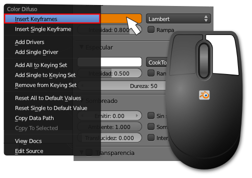
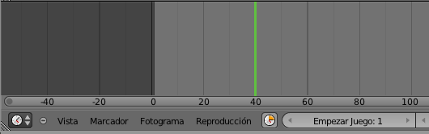
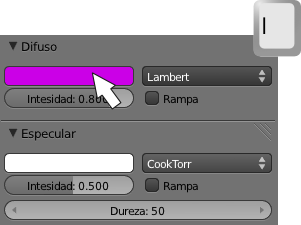

Todo se puede animar
En un keyframe se puede especificar prácticamente todo lo que nos imaginemos; de hecho uno de los eslóganes del lanzamiento de la memorable versión 2.50 era "Todo se puede animar". Y es cierto.
Lo mejor es comprobarlo en un ejemplo.
- Al cubo de la escena por defecto le asignamos un Material si no lo tiene ya y le damos un color Difuso.
- Sobre el gran rectángulo de color accedemos al menú contextual con clic derecho y seccionamos Insert keyframes (aparece un recuadro verdoso que señala que ese parámetro tiene keyframes).

- Ahora en el editor Línea de tiempo
 desplazamos la localización de la animación al fotograma 40 más o menos.
desplazamos la localización de la animación al fotograma 40 más o menos.

- Regresamos al editor de color Difuso y cambiamos el color a otro radicalmente opuesto. Y una vez creado repetimos la operación de insertar un keyframe.
Ya está hecha la animación. Cuando regresamos al comienzo (fotograma 1) y activamos la animación ("Alt_A") el cubo cambiará de color progresivamente.
Tecla "I"
Una vez colocado el ratón sobre el campo en el que queremos insertar el keyframe no es realmente necesario acceder al menú contextual con clic derecho. Basta pulsar la tecla "I" para que se genere automáticamente.
Ejercitación
¿Se te ocurre dónde más utilizar este recurso?. En realidad en muchos parámetros aunque algunos de ellos sólo se hacen evidentes en la renderización; por ejemplo, si insertamos keyframes en la Energía de una lámpara para que se encienda o apague.
¿Más sitios para que ganar destreza?:
- El valor de Alfa en un material con transparencia.
- En Distancia focal de la cámara.
- En el Tamaño de suavizado de una lámpara.
- ...